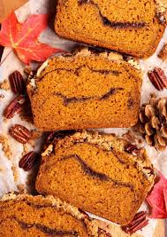
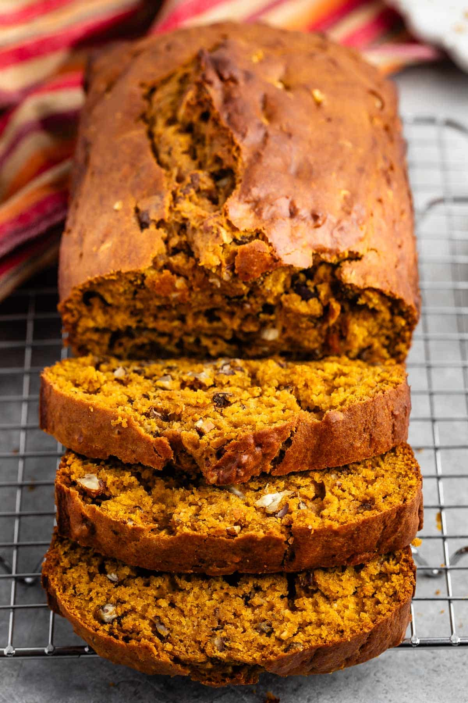
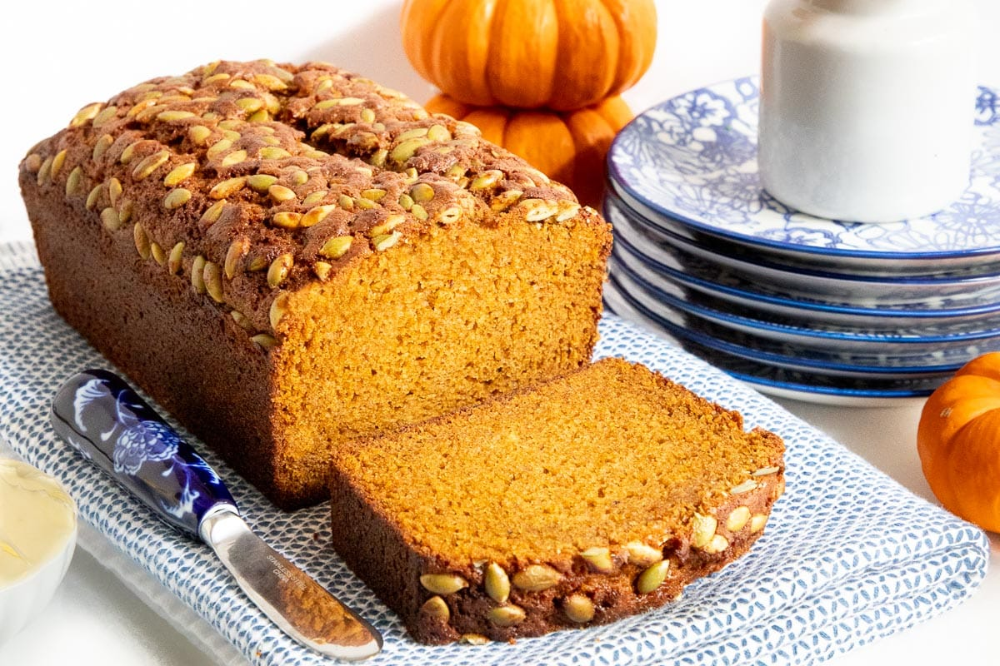

What we strive for as a company
Elise's Pumpkin Loaf Bakery is committed to being an active part of the Oxford community
as one of the many small business owners, which we like to consider a family. We have specially curated
a unique vibe of relaxation and coziness. There is too much hustle and bustle in everyday life to not
have a spot for just rest, which is why we invite every customer to spend some time in our comfy seating
areas, lovesacks included!
We also believe that our menu, while mainly autumnal, encapsulates the fact that fall flavors can be
enjoyed every season. While our specialty is pumpkin loaves, our menu diversifies with lattes,
espressos, coffee cakes, cupcakes, sourdough loaves, and tarts. Give us a stop by to experience the
Elise's Pumpkin Loaves difference.
Our Menu
- Cold Foam Lattes
- Fruit Tarts
- Sourdough Loaves
- Pumpkin Loaves
Pumpkin Loaves (our specialty menu)
| Name |
Description |
Price |
| Nutmeg Pumpkin Loaf |
Our classic loaf with a nutty twist, good for all you nuts out there! (contains: nuts, do not
consume if you are allergic to nuts) |
$5.95 |
| Vanilla Glazed Loaf |
If the classic loaf isn't sweet enough for you, try our classic loaf drizzled with vanilla bean
sweet glaze. |
$4.95 |
| Cinnamon Snap Loaf |
Classic loaf with a warm cinnamon blend and slight notes of peppermint. |
$6.95 |
| The Classic |
Our original loaf, made with an in-house pumpkin puree that perfectly encapsulates the sweet
taste of pumpkin. |
$4.95 |



Cold Foam Lattes
| Name |
Description |
Price |
| Sweet Cream Cold Brew |
Our specially formulated in-house cold brew topped with a sweet cream cold foam, can be ordered
in small, medium, or large. |
$4.95 |
| Sweet Cream Pumpkin Cold Brew |
Our specially formulated in-house cold brew topped with a sweet cream pumpkin cold foam (made
with real pumpkins), can be ordered in small, medium, or large. |
$5.95 |
| Matcha Latte |
A caffeinated, creamy, and frothy tea-based drink, can be ordered in small, medium, or large.
|
$7.95 |
| Peppermint Cream Latte |
Our in-house cold brew topped with a whipped peppermint cream cold foam, can be ordered in
small, medium, or large. |
$8.95 |
Sourdough Loaves
| Crusty, tangy bread with a chewy interior and airy texture. |
$7.00 |
Fruit Tarts
| Name |
Description |
Price |
| Classic Tarty-Tart |
A classic tart topped with fresh whipped cream, glazed kiwis, strawberries, blueberries, and
mandarin oranges. |
$3.95 |
Enter your phone number here to be entered into our monthly cookie drawing!
Help us select our next best seller!